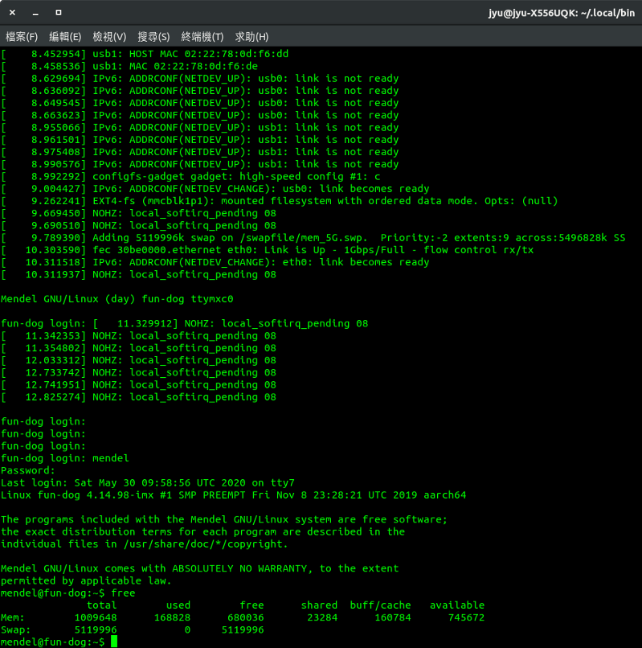

Google Coral Dev Board預設配置只有1G記憶體，在使用上可能會碰到記憶體吃盡情況下，就需要在建立一個虛擬記憶體來進行分配，在空間使用上透過外接SD卡來建立一個分割磁區，放置Swap使用來源空間配置。
需要做的配置動作有：
Step 1.查看目前磁區掛載狀態
sudo fdisk -l
Step 2.選擇SD卡磁區進行操作管理
sudo fdisk /dev/mmcblk1p1
Step 3.刪除SD卡磁區
Command (m for help): d
Step 4.新增SD卡磁區
Command (m for help): n
Partition type
p primary (0 primary, 0 extended, 4 free)
e extended (container for logical partitions)
Select (default p): p
Partition number (1-4, default 1): (預設就好，直接按Enter下一步)
First sector (2048-20971519, default 2048): (預設就好，直接按Enter下一步)
Last sector, +/-sectors or +/-size{K,M,G,T,P} (2048-20971519, default 20971519): +5G (這裡我設定使用5G)
Step 5.儲存建立動作
Command (m for help): w
SD卡磁區掛載對應在 Dev Board內/swapfile，如果沒有存在/swapfile，請先執行以下指令建立此位置。
sudo mkdir /swapfile
操作之前記得要先掛載SD卡磁區至/swapfile
sudo mount /dev/mmcblk1p1 /swapfile
Step 1.建立Swap設定區塊檔
cd /swapfile
sudo dd if=/dev/zero of=./mem_5G.swp bs=1024 count=5120000
if → 來源配置區塊，此處設為/dev/zero代表沒有使用的來源區塊。of → 輸出配置區塊設定檔，為虛擬記憶體配置檔。bs → 區塊配置單位大小，假設為1024代表一個區塊單位為1024 byte，也就是1KB。count → 總共有幾個區塊數量，如果要設定為5G換算為5000(MB)*1024 = 5120000 (KB)。Step 2.轉換Swap設定區塊檔為系統檔
sudo mkswap /swapfile/mem_5G.swp
Step 3.啟用Swap
sudo swapon /swapfile/mem_5G.swp
啟用來源為已經轉換為系統檔的Swap設定區塊檔。
Step 4.確認Swap啟用狀態
free
Step 1.在/usr/local/sbin/建立一個swapon.sh
sudo nano /usr/local/sbin/swapon.sh
swapon.sh內容：
#!/bin/bash# 掛載SD卡進/swapfile
sudo mount /dev/mmcblk1p1 /swapfile
# 啟用虛擬記憶體
sudo swapon /swapfile/mem_5G.swp
Step 2.在/etc/systemd/system/建立一個swapon.service
sudo nano /etc/systemd/system/swapon.service
swapon.service內容:
[Unit]
Description=Swap On
After=getty.target
[Service]
ExecStart=/usr/local/sbin/swapon.sh
Type=notify
NotifyAccess=all
StandardError=syslog
[Install]
WantedBy=multi-user.target
Step 3.啟用服務(開機登入會自動啟用服務)
sudo systemctl enable /etc/systemd/system/swapon.service
Step 4.查看服務狀態
systemctl status swapon.service
Step 5.重開機Dev Board，並且登入查看是否有自動正常掛載Swap
sudo reboot
開完機登入後，執行以下指令查看是否有正確掛載虛擬記憶體
free
